Important Note: These instructions tell how to install Wasta Linux to dual boot with an existing Windows system - so that at boot time the actual system that is booted can be selected from a grub boot menu which will allow Windows to be selected rather than the newly installed Wasta Linux system. These instructions, when followed carefully, will allow you to preserve the data on the Windows partitions as well as the Windows system itself. The Windows partition(s) will be shrunk down in size to provide free space on your hard drive for the Wasta Linux installation. Although this process can be done without wiping out data from the computer, it is always good to make sure you have backed up all data to an external drive before proceeding with these installation steps. Step 4 below is where changes are “staged” or put into a pending list to take place - you can abort the installation at any time before you get to the point of pressing the “Apply All Operations” button within step 4.
Note: If you want to install Wasta Linux so that it totally replaces an existing Windows system see the document “How to install Wasta Linux totally replacing Windows”
 This
document is an illustrated guide that shows how to install Wasta
Linux to dual boot with an existing Windows system. If you want to
install Wasta Linux, but you need to keep the computer’s ability to
boot to either Wasta Linux or to Windows (dual boot), this document
shows you how to do that installation.
This
document is an illustrated guide that shows how to install Wasta
Linux to dual boot with an existing Windows system. If you want to
install Wasta Linux, but you need to keep the computer’s ability to
boot to either Wasta Linux or to Windows (dual boot), this document
shows you how to do that installation.
This document is designed to be a guide for an Advisor, Consultant, or Technician with some knowledge about booting and operating systems - or wants to learn! This document describes how to make radical changes to the computer that cannot be easily reversed. The booting process for some computers can be different from other computers, so this document cannot predict all possible scenarios that might occur during the process of booting, shrinking the existing Windows system, and installing Wasta along side Windows. Hence, there is some risk that this process could turn your computer into a “brick” that can no longer boot to any operating system. That risk, I think, is small, but not zero. I think it is worth the risk, and if you also think so please proceed. The document is well illustrated with screenshots throughout. You will find it helpful if you read through the whole document before trying to execute it step by step. Note: The first 3 Steps of this document link to the companion document entitled: “How to install Wasta Linux totally replacing Windows”.
It makes sense:
If you would like to switch to using Wasta Linux on your computer, but you cannot or do not feel free to totally remove Windows from the computer - at least at the present time.
If you have one or more Windows-only programs that you must use on the computer and for which there is no Linux equivalent or substitute, so you know there will be times that you will need to boot up the computer in Windows in order to use that Windows-only software. (Note: such situations are really very rare these days!).
If you are tired of the expense and hassle of always being tied to Microsoft Windows with its licensing restrictions, its vulnerability to viruses and malware, its time-consuming updates, and its encroachment on your privacy.
If you want an operating system and software that is highly secure and efficient - and specially designed for the tasks that you do in your work.
Note: Putting Wasta Linux on an older Windows XP or other Windows computer is a good way to bring renewed life back into that computer. But, in such cases, we strongly recommend that you totally remove Windows from the old computer, and not set it up to dual boot to Wasta Linux as well as the old Windows system. Old Windows systems are no longer supported by Microsoft and have serious security vulnerabilities – so, each time you decide to boot to the old version of Windows, you subject the computer to those worsening security vulnerabilities. For a better choice, please see the document: “How to install Wasta Linux totally replacing Windows”.
The first 3 Steps of our documentation are identical to the first three steps of the companion document entitled: “How to install Wasta Linux totally replacing Windows”. To avoid a lot of duplication, we only provide links to those 3 steps here. You should refer to that other document and follow the first 3 detailed steps which are well illustrated there (more than 12 pages), then return to this document and continue with Step 4 below.
Follow Step 1 in other documentation entitled “How to install Wasta Linux totally replacing Windows”.
Follow Step 2 in other documentation entitled “How to install Wasta Linux totally replacing Windows”.
Follow Step 3 in other documentation entitled “How to install Wasta Linux totally replacing Windows”.
This step assumes you have successfully followed the first 3 steps detailed in the companion document “How to install Wasta Linux totally replacing Windows” and are currently booted to a “Live” session of Wasta Linux 16.04.1.1 on your computer. Your desktop should be displaying the “Live” session of Wasta’s desktop on your screen which looks like this:
The existing Windows system normally reserves the entire disk space for its own use. In order to make space for Wasta Linux to be installed on the same computer, we will use the GParted program to shrink the main Windows partition of the computer’s hard drive.
Start up the GParted program by selecting GParted from the Administration category of the main Menu of the live Wasta session:
The GParted program will first ask you to type your password:

GParted then scans the partitions that exist on the computer hard drive and other storage devices, and displays its main program screen which looks like the following example - from a computer with Windows 10 on it:
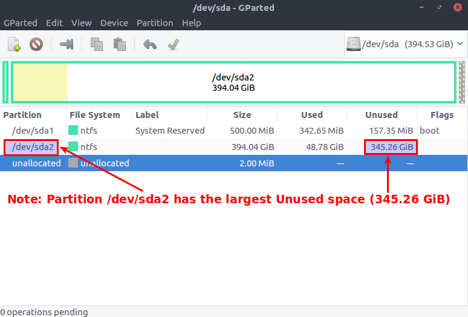
Study the GParted display of your computer. The above illustration is a sample only – your computer will certainly look different, but there will be some similarities. The partitions that have an ntfs type of file system are Windows partitions. Also partitions of the "fat32" or "fat" type are Windows compatible partitions. There is more background information about computer partitions in the Appendix at the end of this document.
The above illustration shows a Windows 10 computer that has 2 ntfs partitions; your computer may have 3 or more, and the size of your partitions will almost certainly be different from those shown above.
You need to determine which ntfs partition on your computer is the main Windows partition. Look for the partition that has the largest Size – in Gigabytes (GiB). It should also have the largest Unused space. The relative size of the disk’s partitions is represented in the horizontal bar graph in the above illustration. Some manufacturers label the main Windows partition something like “Windows10_OS”, “Windows8_OS” or “Windows7_OS”. Pay close attention to the difference between Megabytes (MiB) and Gigabytes (GiB). It takes about a thousand Megabytes to make one Gigabyte. So, in the illustration above the first partition (/dev/sda1) is only half a Gigabyte (500 Megabytes or MiB) in Size. The second partition (/dev/sda2) is 394.04 Gigabytes, or about 394,000 Megabytes and it has about 345.54 GiB, or 345,540 MB of unused space. Although it has no name in the Label column, clearly, the /dev/sda2 ntfs partition is the largest, and has most unused space. We will shrink partition sda2 to make space for our Linux partitions on this computer.
Once you have determined which partition is your main Windows partition, click on the line representing the main partition in GParted to select/highlight it as shown in the illustration below:
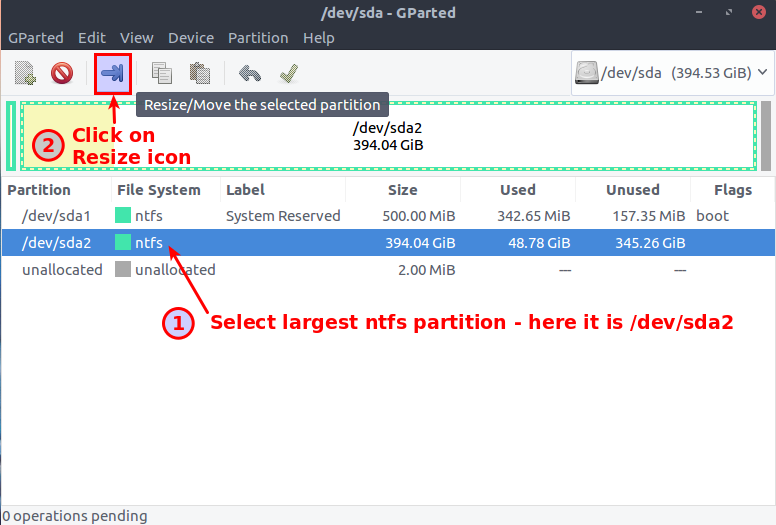
With the main Windows partition selected (sda2 in the above example), click on the Resize/Move icon in the tool bar, as shown in the above illustration. After clicking on the Resize button, the Resize/Move dialog should pop up over the main GParted window:
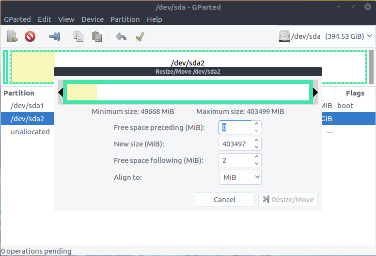
The pop up dialog shows a graphical representation of the main Windows partition at the top of the dialog, and also shows some information about this main partition. Our goal is to make this Windows partition smaller, and at the same time, free up space on the hard drive – space that we will later use to create some Linux partitions in. Here is another view that only shows the Resize/Move dialog:
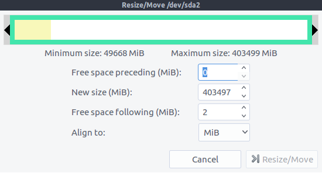
We will make changes to this partition (/dev/sda2) using the graphic at the top of the above dialog:
Within the graphic, note that the yellow shaded part at left represents the “used” part of the partition – the part containing data or files. The white part at right represents the part of the partition that is “unused” - the part that has no data or files on it.
Using your mouse click down on the slider at the right end and hold it down while dragging the slider to the left – to a point about half way within the white area – as shown below:
The gray area that appears to the right of the slider arrow is freed space – the space where we will create our Linux partitions later. The Resize/Move dialog should now appear similar to this:
The size numbers shown above are for illustration purposes only. Your numbers will vary depending on the starting size of the Windows main partition on your system, and the amount of data and files on it. As you drag the slider to the left, the numbers in the New size (MiB) and in the Free space following (MiB) boxes automatically adjust proportionally, keeping the total of those two values equal to the Maximum size available. The white space to the left of the sizer is the unused space that will stay with the Windows system, and the gray space labeled “Freed space” above is the size that will become available for Linux partitions. The actual size in MiB is shown in the “Free space following” box. You can adjust the slider to whatever proportion you want to devote to each operating system, but giving each operating system about half of the available (white) space is a good starting point.
When you have adjusted the slider to the point you want, click on the Resize/Move button in the lower right corner of the dialog. Clicking the Resize/Move button will set up the resize operation as a pending operation.
Remember: The changes you are making within GParted are not made immediately on the actual computer. The changes are put into a queue of “pending operations” which will only be executed when you are ready to “Apply All Operations”.
After clicking on the Resize/Move button in the overlay dialog, the main GParted screen will now look like this illustration below:
Notice that the graphic is now displaying what the main partition (/dev/sda2) will look like after the pending operation has been executed. If you were to “Clear all operations” (on the Edit menu), or Quit the GParted program (from the GParted menu), no changes would be made to the computer.
When you are ready to shrink the Windows partition, click on the Apply All Operations icon on the GParted tool bar (the icon with the green tick mark).
You will be asked to confirm the operation:
Click on the Apply button to execute the partition resize operation. Be patient. The process can take a long time especially if GParted needs to move data down to safety out of the area of the partition that is being shrunk.
GParted will show a progress bar as the operation proceeds:
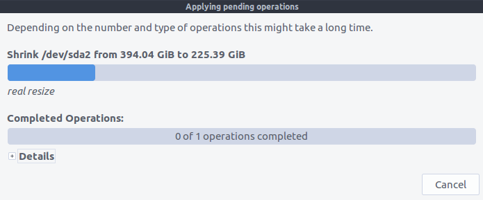
When the process completes it will show a dialog announcing “All operations successfully completed” as shown in the illustration below:
Click the Close button. The GParted screen will then show the current state of computer’s Main Windows partition as shown in the illustration below:
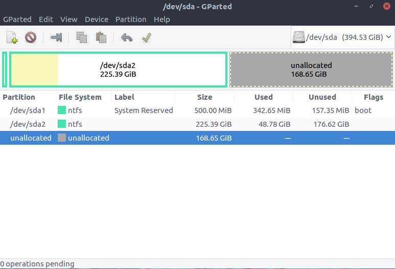
The “unallocated” space shown in the illustration above (168.65 GiB) is where we will have the Wasta installer create our Linux partitions as described below. Your unallocated space will be different.
While the GParted program is still running, it is a good time to see if we can create an Extended partition within the unallocated space that we freed up in Step 4 above. The Extended partition will be the “container” for the Linux partitions we will create later during the actual installation of Wasta Linux.
With the “unallocated” line selected/highlighted as shown in the image above, click on the Partition menu (at the top of the GParted program screen), and select the New menu item as shown in the screen illustration below:
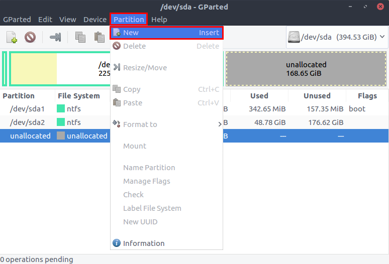
If there are 4 or more partitions showing in the GParted window at this point, it is possible that GParted will not allow you to create a new partition on the hard drive. If GParted presents you with this error message when you try to create a new partition:
it is likely that there are already the maximum number of 4 primary partitions on the hard drive. To remedy this situation please skip down to the Appendix section entitled: “If the partitioner cannot create partitions or the drive has ‘unusable’ space on it” and follow the procedures detailed there before you attempt to install the Wasta Linux system in Step 6.
If you don’t see the error message shown above, you should now see a dialog that looks like the following illustration:
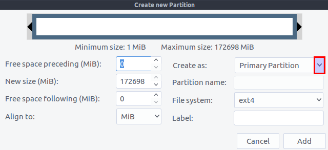
Click on the drop down arrow to access the Create as list and select Extended Partition as shown in the illustration below:
With Extended Partition selected in the Create as list, click on the Add button as shown below:
GParted will now show a New Partition #1 - planned as a pending operation within its graphical representation of the partitions, as shown below:
To execute the pending operation and create the new Extended partition click on the Apply All Operations icon in the GParted tool bar as shown above. You will be asked to confirm the operation with this message:
Click on the Apply button to proceed. Normally the creation of the Extended partition will be done quickly and you will see the following message that “All operations successfully completed”:
Click on the Close button to continue. GParted now shows the extended partition added as sda3, with unallocated space of 168.65 GiB available:
The “extended” partition functions as a container. The “unallocated” part of the extended partition is where we will create the Linux partitions. We will not create the Linux partitions during this session of GParted, but will do so below during the installation of the Wasta system in Steps 6 and following.
So, select Quit from the GParted menu to close the GParted program window for now.
Our next step will be to start up the Wasta installer while we are still booted from the “Live” Wasta Linux memory stick. In the remaining steps we will do the actual installation of the Wasta system on the computer.
The remainder of this document describes how to install Wasta Linux on the newly created “unallocated” space on your computer.
Note that Steps 6 through 9 are non-destructive installation steps. You can feel free to proceed down through the first part of step 10 below. No new changes will be made on your computer if you decide to Quit before you get to the last part of step 10 below (clicking on the Install Now button).
At this point you should still see the desktop of the “Live” Wasta Linux session on your computer screen:

Start the installer by double clicking the “Install Wasta Linux 16.04” icon on the live session desktop as shown above.
Wait for the installation “Welcome” window to appear. It will allow you to change the language for the installation and looks as follows:
English is usually the default selection. Click Continue. The next screen appears.
If your computer has an active wireless connection – but not yet connected - the installer may ask you if you want to connect the computer to the wi-fi network:
If you wish to you can select the Connect to this network button, select the name of your network in the list, and enter your network’s security password/key in the Password box. But, a connection to your wireless network is optional, and being connected to the Internet is not required during the installation. So, you can also leave it set to the default “I don’t want to connect to a wi-fi network right now” - especially if you have slow or expensive Internet. You can connect after installation (or use a full wasta-offline mirror to update your software). If you wish to connect now you can do so as you did in Step 3 above when you played around with the Live system. In either case, then click Continue when you are ready to move on to the next step.
Next, a Preparing to install Wasta Linux screen will appear - offering to download updates and third-party software while installing:
We will not install these updates and third-party software during the initial installation. You can do updates after installation, so just leave the check boxes un-ticked, and click Continue.
The next install wizard page wants to know how you want Wasta Linux to be installed on the computer, especially in relation to any existing operating system such as Windows - or a previous Linux installation(s). The appearance of this dialog will vary depending on what operating system(s) are already on the computer. We are assuming here that some version of Windows is on the computer.
The Installation type dialog will look similar to one of the dialogs shown below – depending on the version of Windows that is resident on the computer. Regardless of the type of Windows system on your computer, we will always elect to do a manual partitioning of the hard drive – which is always going to be the last option called “Something else” in the Installation type that is presented to you.
Therefore, if you are installing Wasta Linux:
to replace Windows XP, proceed with the Windows XP section below
to replace Windows 7, 8 or 8.1, skip to the Windows 7, 8, or 8.1 section
to replace Window 10, skip to the Windows 10 section
The Installation type dialog will look similar to one of the dialogs shown below – depending on the version of Windows that is on the computer:

The first option is often pre-selected, but you should choose Something else instead. Click Continue and skip down to Why do we choose Something else?
The first option is often pre-selected, but you should choose Something else instead. Click Continue and skip down to Why do we choose Something else?

The first option is often pre-selected, but you should choose Something else instead. Click Continue.
It is possible to install Wasta Linux using one of the other Installation type options, but this documentation suggests choosing Something else for the following reasons:
The Something else option allows us to have your /home directory on a separate partition. Having /home on a separate partition makes it easy to upgrade to a newer version of Wasta (or other kind of Linux) in the future without touching any of your documents, data or settings.
The Something else option allows us to choose the size and arrangement of the partitions that will be created on the computer’s hard drive.
Different versions of Windows come with different numbers and kinds of partitions. By selecting Something else, we can ensure that we can fit the Linux partitions within the unallocated space (we created earlier), so that the Linux and Windows partitions can co-exist and the computer can be booted to either Wasta or Windows at startup.
While the first couple options in the above dialog may vary depending on how your Windows computer is set up, the last option for any installation will always be Something else. The Something else option therefore allows us to standardize this document, and reduce the number of possible variations and gotchas that might happen if we tried to describe one of the other options.
We are not planning to encrypt the new Wasta installation, nor use the Logical Volume Management (LVM) system. The use of these technologies is not necessary in most environments. They are more complicated to set up at installation time and so are beyond the scope of this document.
Note: The Installation type dialogs shown above may differ a little from what you see on your particular Windows computer, but the last option "Something else" should always be available and is the one you should select to follow this document. After selecting Something else, click Continue.
The installation program uses a partitioning program to show you a graphical display of the existing partitions that are on the computer's hard drive. The Wasta installer calls on the services of the GParted program, so the display will look quite similar to what you saw while using GParted earlier to resize the main Windows partition and create the extended partition. The graphics within the installer will look a little different, but you should recognize the general partitioning layout and the information it displays:
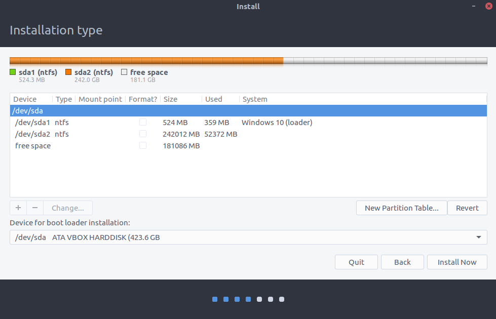
The appearance and the number of partitions displayed in the dialog you see will depend on what partitions currently exist on your computer. You will want to study the graph showing on your screen, and the information displayed on it carefully.
If you already created the Extended partition with Gparted in an earlier step that became sda3, you may be wondering why an extended partition named sda3 is not showing in the above dialog. During installation, the installer simply hides the extended partitions and other things from view, and just represents it as “free space” as shown above. The installer takes care of the assignment of partition device names (as you will see below).
The point of no return is the Install Now button at the bottom right of this installation page. Do not click on that button until the end of Step 10. Our actions in creating Linux partitions are only simulated until we get them just the way we want them. We can adjust them over and over again without making actual changes to your computer. At any time you can call it quits by clicking on the Quit button – and no new changes will be made to your computer. Again, don’t click on the Install Now button until you are ready for the changes to be made on your computer (at the end of Step 10 below).
We want to now start adding the Linux partitions to the Extended/unallocated space. We will add three logical partitions, one at a time:
A Linux root (/) partition with a size of 15GB (15000MB)
A Linux swap partition with a size of 4GB (4000MB)
A Home partition (/home) with the remainder of the free space
The first partition we want to add is the Linux root (/) partition with a size of 15GB or 15000MB.
Select the free space line in the dialog, and click the plus button to add a new partition as shown in the illustration below:
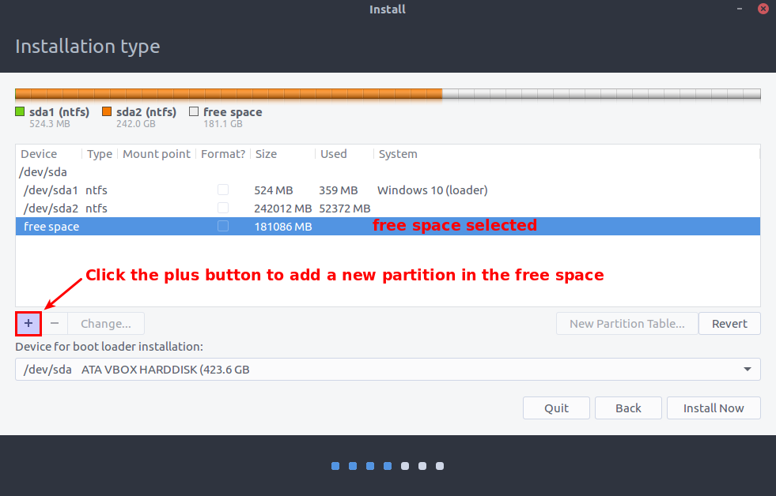
If the “Create partition” dialog pops up, skip down to the Setting the data for the Linux root / partition section below.
Note: If, the partitioner won’t allow you to add a new partition, and instead it shows the unused part of the hard drive as “unusable,” as shown in the following sample:
then the hard drive already has the maximum number of 4 primary partitions permitted on the hard drive. If that is the case on your computer you will need to remove one or more of the non-critical Windows partitions in order to be able to create a new “extended” partition to hold the Linux partitions. For instructions on how to do that, see the section “If the partitioner cannot create partitions or the drive has unusable space on it”, then return here.
After pressing the plus button, the partitioner puts up a “Create partition” dialog to get the information it needs for the new partition. Make the settings as shown below:
Double check to ensure that the following 5 settings are set:
1. Type 15000 for the Size of the root partition (it is in Megabytes (MB) = 15 GB).
2. Ensure that the Logical button is selected for the Type of the new partition.
3. Ensure that the Ext4 journaling file system is selected for Use as from the drop down list.
4. Ensure that the Beginning of this space is selected for Location for the new partition.
5. Select Mount point of / from the drop down list (the top item of the list)
The dialog should now look like this:
Click the OK button to close the Create partition dialog. The partitioner now shows the new Linux root partition planned for installation:
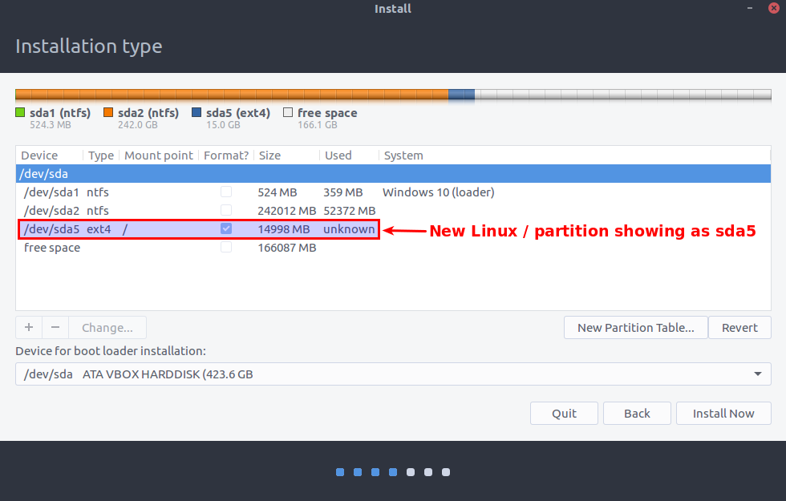
Note that the partitioner named the new Linux root partition sda5 instead of sda3 or sda4 that you might have expected. What happened to sda3 and sda4? This seemingly odd partition naming is the result of creating our first Linux partition as a “Logical” partition. During installation, the system reserves some of the device names for its “extended” partitions and “logical” partitions.
The second partition we want to add is the Linux swap partition with a size of 4GB or 4000MB. A swap partition is a special partition that Linux can use to swap out some of its RAM memory if it needs to. It is generally recommended to have a swap partition that is at least as large as the amount of RAM memory in the computer. If your computer has more than 4 GB then increase the swap size accordingly. For example, if you computer has 6 GB of RAM memory, you can make the swap partition size 6000 MB. If it has 8 GB of RAM memory, make the partition size 8000 MB. If it has just 2 GB of RAM, you can make the swap size 2000 MB.
Select the free space line in the dialog, and click the plus button to add a new partition as shown in the illustration below:
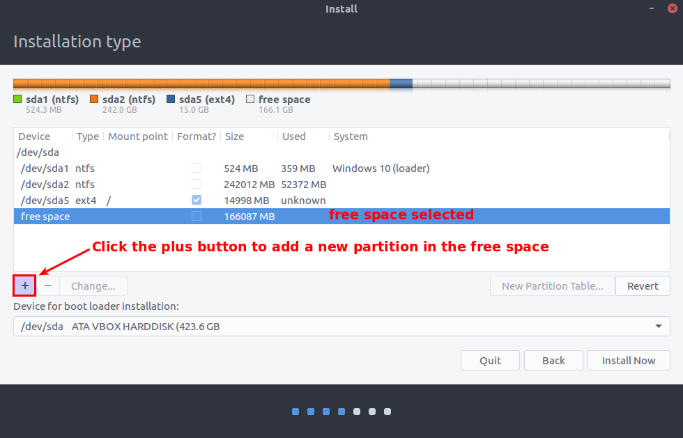
After pressing the plus button, the partitioner puts up the “Create partition” dialog to get the information it needs for the new partition. Make the settings as shown below:
Double check to ensure that the following 4 settings are set:
1. Type 4000 for the Size of the root partition in Megabytes (MB) = 4 GB.
2. Ensure that the Logical button is selected for the Type of the new partition.
3. Ensure that the Ext4 journaling file system is selected for Use as from the drop down list.
4. Select swap area from the drop down list next to the Use as setting.
Note: There is no Mount point setting for a swap partition.
The dialog should now look like this:
Click the OK button to close the Create partition dialog. The partitioner now shows the new Linux root and swap partitions planned for installation:
The third and final partition we want to add is the Linux /home partition. The /home partition is where all your user generated files will be stored including your Documents, Music, Pictures, Videos, Downloads, Desktop files, and all of your user settings including settings for the applications you will be using. For our /home partition we want to use up all of the remaining free space.
As you have learned from the above procedures, first we select the free space line in the dialog, and click the plus button to add a new partition as shown in the illustration below:
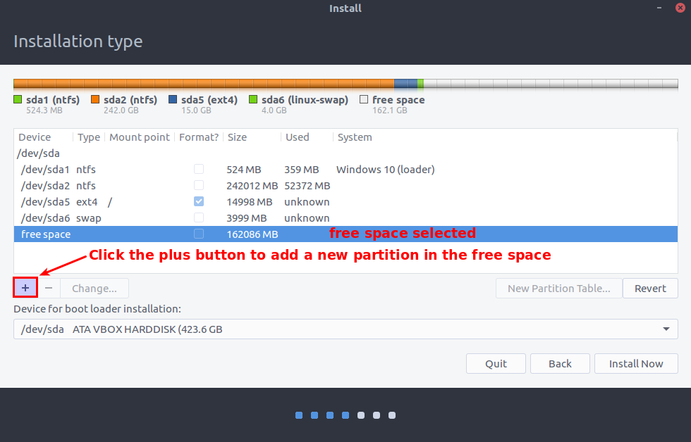
After pressing the plus button, the partitioner puts up the “Create partition” dialog to get the information it needs for the new partition. Make the settings as shown below:
Double check to ensure that the following 4 settings are set:
1. Leave the Size set to: your maximum space left (entered automatically)
2. The Type of partition is set to: Logical
3. The Location is set to: Beginning of this space
4. The Use as selector is set to: Ext4 journaling file system
5. The Mount point is set to: /home
The dialog should now look like this:
Click the OK button. The display will update showing your new /home partition:
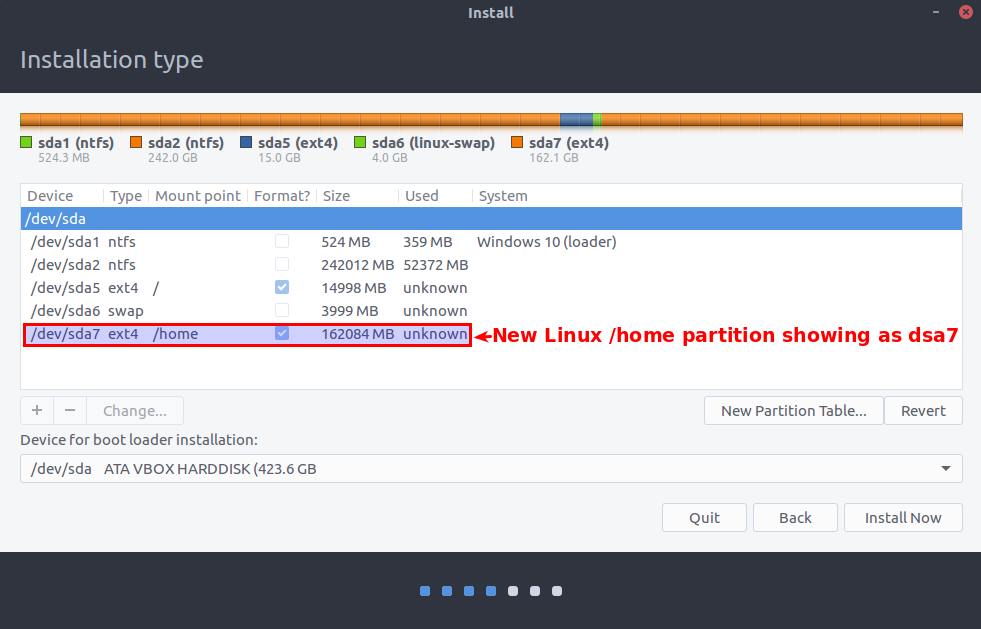
Things to note:
We had the installer partition the drive to use all the remaining free space.
There are check boxes next to the root partition (/), and the /home partition, indicating that those partitions will be formatted during the installation process. Since this is a new installation of Linux on this computer, all partitions will be formatted including the /home partition. If we were re-installing Linux or upgrading to a newer version of Linux on this computer, its /home partition would NOT be formatted by default – leaving any data on the /home partition untouched. The Linux installer won’t automatically format any existing Linux /home partition.
The "Device for boot loader Installation" selector should show the computer's main hard disk (usually /dev/sda) with the hard disk's known capacity shown in parentheses.
Make sure the settings and partitions are set according to the above information. The next action will install Linux according to the partitioning scheme we have defined for the free space that was available. If you don’t want to continue click the Quit button.
The installer presents one last confirmation dialog that looks like this:
The “Write the changes to disks?” dialog shown above presents a summary of what changes will be made to your computer during the installation. If you are unsure you want to install Wasta Linux along side your Windows system, or, if something appears wrong with the summary information, this is your last chance to avoid the changes. If you decide not to proceed, you can click Go Back button to return to the last Installation Type screen. Otherwise, go ahead and click the Continue button to start the installation.
The installation will start and present you with some configuration screens while the system does the partitioning, formatting and installation of the Wasta Linux system. The first configuration screen will be the “Where are you?” screen that looks like this:

Click on the general area of the world map where you are located. For Manus users, the time zone that includes PNG should be highlighted, so that "Port Moresby" shows on the time zone selected.
Click Continue.
The next configuration screen is the keyboard layout screen which looks like this:

Click Continue to use the “English (US)” keyboard as default, unless you have a different keyboard layout on your computer.
The next screen is the “Who are you?” screen which appears as illustrated below:
Fill in the requested information and password:
Type your name in the top box.
The computer’s name is the name that it will have on any local network.
The username you type in will be used as the name of your user folder in the Home directory.
It is smart to use a good password – one that you can remember.
You should keep the button selected “Require my password to log in.”
Click Continue. The installation process does not require any additional input from you. The installer will display a little slide show that describes some of the features available in (Ubuntu) Linux. The installation progress is displayed in the bar at the bottom of the slides. Most installs take less than 30 minutes.
When the installation is finished a dialog will appear that looks like this:
Click on the Restart Now button. As the computer shuts down you will see:
Remove the memory stick at the prompt and press Enter to reboot the computer.
Each time you boot into your Wasta Linux system, you will need to type your password into the login box. Your login password is the password you set during the installation. The same password is also used when you do administration tasks such as installing software:

If the prompt inside the login box asks for your Username, you can type it in, or click on the user name with a mouse to get the Password prompt.
Once the system has started up, and you have logged in, you can set the background image: Right-click on the desktop and select “Change Desktop Background”. The Backgrounds applet will appear:

You can select a stock picture from one of the Linux distributions by selecting the distribution name in the left panel. Alternatively, you can select a Background image from your Pictures folder. You can load a different folder by clicking on the little + button to add a folder of pictures to the selection list.
For the Manus computers, navigate to open the “Pictures” folder. Then, double-click on the "manus_jaha_background_images" folder. This folder has 30 Manus-Jaha backgrounds. Select the one that agrees with the N number used in the user name above. Scroll down in the background pictures to select the appropriate background picture. Select Advanced and from that drop down list choose the “Stretched” option to make the Manus-Jaha image fit the screen.
While most software and resources are immediately available for use, some programs like Paratext and Adapt It will need additional setup and configuration.
The Paratext registration information will need to be entered for the specific user of the computer. Paratext will also need to have its projects created, and if used in collaboration with Adapt It, Paratext will need the following projects setup as a minimum for collaboration with Adapt It:
* A source language Paratext project - containing the Scripture books imported into the Paratext project that will be used in Adapt It as source text for adaptation work.
* A target language Paratext project - containing Scripture books created as empty books (i.e., "empty" but containing chapter and verse numbers when created within Paratext). This initially “empty” project will be used in Adapt It as target or translation text for adaptation work, and will be transferred automatically to Paratext each time the adaptation document is saved within Adapt It.
Adapt It can be configured to collaborate with Paratext, but the necessary Paratext projects need to be created first (see above). Once the Paratext projects are created for the source language and target languages, an administrator can make the "Administrator" menu visible within Adapt It, and use its “Setup Or Remove Collaboration” menu to set up one or more Adapt It collaboration projects between Adapt It and Paratext. See the Adapt It HTML document named Help_for_Administrators.htm for more details on how to set up collaboration between Paratext and Adapt It.
If you are reading this section of the appendix, it is likely due to getting the following error message
when you tried to create an extended partition on the computer’s hard drive. Or, you may have noticed that GParted shows that a large section of space on your hard drive is “unusable” similar to what is depicted by the illustration below:
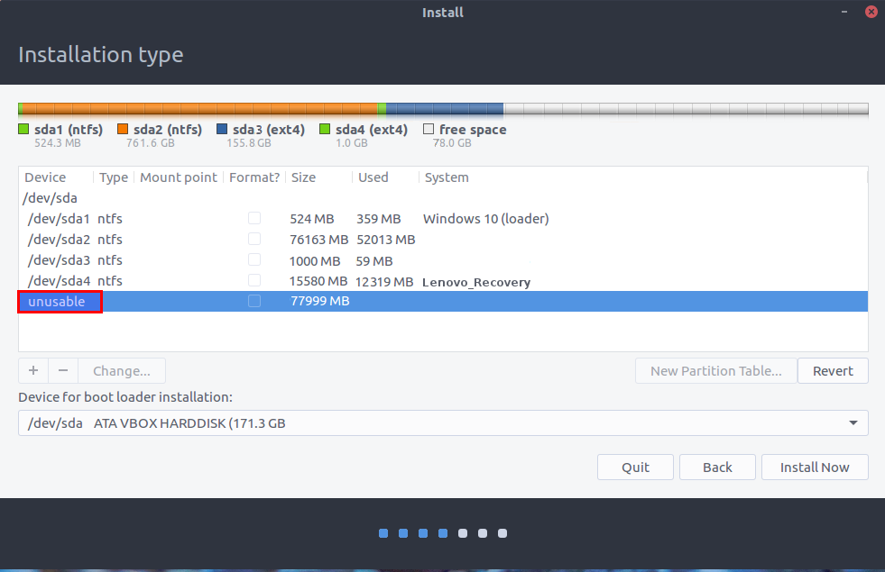
For either of these situations, it is likely that there are already the maximum number of “primary” partitions (4) configured on your hard drive. The sections below will tell more about how to handle this situation, and make it possible for you to install the 3 Linux partitions we will add to your computer’s hard drive during the installation of the Wasta Linux system on your computer.
First we’ll present some educational background information about partitions and partitioning. But, if you are in a hurry, you can skip down to the section called How to recover the unusable space.
In the realm of disk partitioning, there are three types of disk partitions: primary, extended, and logical partitions.
There are two partitioning schemes in common use today: the Master Boot Record or MBR partitioning scheme, and the GUID Partition Table or GPT partitioning scheme. The MBR scheme is older and is gradually being replaced by the newer GPT scheme.
A disk with a traditional partition table (MBR) can only have up to 4 partitions. In the MBR scheme, each disk can have up to 4 primary partitions or 3 primary partitions and 1 extended partition. If you need 4 partitions or less, you can just create them as primary partitions. Extended and logical partitions are a way to get around this limitation, but logical partitions must be created within an extended partition container – and that extended partition container itself must take the place of one of the 4 possible primary partitions.
If you want to have 6 partitions on a single drive, one way to do that is to create 3 primary partitions and 1 extended partition in the last primary partition slot. The extended partition effectively functions as a container that allows you to create more logical partitions within that extended partition container. So then, if you needed 6 partitions, you can create 3 primary partitions, 1 main extended partition, and then 3 more logical (extended) partitions inside the main extended partition. You could also just create a single primary partition, an extended partition container, and put 5 logical (extended) partitions inside the main extended partition. The main restriction for the MBR scheme is that you cannot have more than 4 primary partitions at a time.
Here is an example illustrating how the partitioning was done for a typical laptop computer after it had been configured to dual boot to either Windows 10 or to Wasta Linux. The illustration below is derived from the Linux “Disks” program that is part of Wasta Linux. It is not a view of the partitioning you will see during installation:
In the above illustration notice the following:
Partition 1, Partition 2, and Partition 3 are “Primary partitions” that came with the Windows computer. Partition 1 is the System partition; Partition 2 is the main Windows partition, and Partition 3 is the Recovery partition. Before we added the Extended Partition 4, we shrank down the Windows Partition 2, and moved the Recovery Partition 3 (without changing its size) to the left to align with the right end of the shrunken Windows partition 2. That left about 341 GB of free space at the right end of the drive for creating the Extended partition 4.
Partition 4 is an “Extended Partition” - it is a container residing in the 4th primary slot and contains additional logical (extended) partitions. Notice that the Extended Partition 4 becomes a container that spans over the 3 logical partitions shown below it in the above illustration.
Partition 5, Partition 6, and Partition 7 are the logical (extended) partitions existing within the main extended partition 4 that spans above them. Sometimes an installer may skip a partition number when configuring logical partitions – so the logical partitions shown above might become Partition 6, Partition 7 and Partition 8, instead of 5, 6, and 7 as shown above.
Notice there are two small areas of “Free Space” - one at the end of the disk space and another one between logical partition 6 and 7. The partitioner will create these automatically if needed in order to align the partitions most efficiently.
As mentioned above, the older partitioning scheme is the Master Boot Record or MBR partitioning scheme as described above, but it is still very common and the easiest scheme for installing a Wasta system alongside Windows on a single computer. The MBR scheme is limited to 4 Windows primary partitions (but one of those can be configured as an extended partition for containing logical partitions) as described above. Because of the 4 primary partition limitation of the MBR partitioning scheme, much of this document focuses on how to install additional Linux partitions under the MBR partitioning scheme.
The GUID Partition Table or GPT scheme is a standard for the layout of the partition table on a physical storage device, such as a hard disk drive or solid-state drive, using globally unique identifiers (called “GUID”). GPT is newer partitioning scheme that is becoming increasingly popular since it can directly handle more than 4 partitions (up to 128), and the GPT drive format lets you set up drives that are larger than 4 terabytes (TB) – with each partition size up to 18 exabytes (about 18.8 million terabytes) of space.
Wasta Linux is fully compatible with both the MBR and the GPT partitioning schemes. A computer equipped with GPT partitioned drive would be an easy environment for installing Linux, except for some complications that can arise due to the use of a security feature called “Secure Boot”.
The GPT partitioning scheme has supported the “Secure Boot” feature since 2012, but manufacturers have varied in the way and extent to which they have implemented the feature. For our purposes in installing Linux on a Windows computer, the Secure Boot mechanism - and the way it is implemented - make it more difficult to boot from a “Live” Wasta Linux memory stick and install Wasta Linux. As a result, Wasta documentation gives guidance on how to turn off Secure Boot as part of the Wasta Linux installation process (see the details in Step 1 of the “How to install Wasta Linux totally replacing Windows” document).
Hard drives need at least one partition in order to be able to store programs and data. The Windows operating system requires at least one primary partition to boot its system, and that primary partition needs to be the first partition on the first hard drive (drive 0) recognized by the system. The Linux operating system is the really flexible guy in the neighborhood. Linux can boot itself from almost anywhere - without the requirement of having its system being stored on a primary partition, or the first partition on the first hard drive in the system.
Note: You cannot modify a partition while it’s in-use. For example, you cannot delete or resize a Windows system partition while Windows itself is running from that partition. This is one reason that we need to boot from a Linux live memory stick to make partitioning changes. A partition may also be in-use under Windows, if Windows is not fully “shut down”, or is in “sleep” or “hibernation” mode in which it has saved part of its operating system and data to a temporary location without completely shutting down the system. For this reason you should always make sure than Windows is fully shut down – and not sleeping, or hybernating, or in some other temporary state before installing Linux with the Live memory stick.
The newer partitioning scheme is called GPT which allows virtually unlimited number of partitions on a hard drive.
Manufacturers of Windows computers used to supply separate media disks for Windows system recovery. In more recent times, however, it is likely that the manufacturer set up the partitioning for your Windows system with one or more primary partitions dedicated as recovery or backup partitions - in lieu of supplying you with physical DVDs or other external recovery/backup media.
The partitions that come on a Windows computer can vary a lot in number, size, order of arrangement and naming. Various computer manufacturers also tend to modify the recommended partition setup that Microsoft specifies, and sometimes add one or more additional partitions. The Windows operating system is much more rigid than Linux as to where the partition is located that contains its system and boot loading files. Generally for Windows, a System partition must be the first partition on the first disk that is recognized by the computer system’s firmware.
The tricky part is that various computer manufacturers may put different labels on the partitions they create on their Windows-equipped computers. They may also add one or more additional partitions for backup purposes and also for “value added” things – also commonly called “bloat-ware”.
Basic Rule: Generally speaking, on a Windows system, any partitions that are located before (to the left of) the main (and largest) Windows partition (see the partition layout diagrams below), are critical to the operating of the Windows operating system. They should not be changed or moved. Any partitions that are located after (to the right of) the main Windows partition, are auxiliary and not critical to the day-to-day operation of the Windows system.
For BIOS-based computers, Microsoft specifies a default partition layout for Windows that includes the following: a system partition, a Windows partition, and a recovery tools partition, as shown in the graphic below:
Web
Reference:
https://docs.microsoft.com/en-us/windows-hardware/manufacture/desktop/configure-biosmbr-based-hard-drive-partitions
Implications for dual booting: If your computer has only 3 partitions similar to what is shown in the above illustration, you can usually just add 1 main extended partition, and create the 3 Linux partitions as logical (extended) partitions within that extended partition. If you find 4 or more primary partitions on your Windows computer, so that after shrinking the Windows partition down to make space available for Linux, that space is “unusable”, you can probably safely delete one or more of the additional partitions after (to the right of) the main Windows partition - leaving the 3 Windows partitions shown above (System, Windows and Recovery).
For UEFI-based computers, Microsoft specifies a default partition layout for Windows that includes the following: a system partition, an Microsoft Reserved Partition (called a MSR), a Windows partition, and a recovery tools partition, as shown in the graphic below:
Web
Reference:
https://docs.microsoft.com/en-us/windows-hardware/manufacture/desktop/configure-uefigpt-based-hard-drive-partitions
Implications for dual booting: If your computer has 4 partitions (or more) similar to what is shown in the above illustration, and the disk uses the MBR partitioning scheme, you may need to determine which which of the 4 or more primary partitions can be deleted in order to make usable free space to install the Wasta Linux partitions. If, after shrinking the Windows partition down to make space available for Linux, that freed space turns out to be “unusable”, you can probably safely delete the Recovery partition, and any other primary partition to the right of the main Windows partition - leaving the first 3 Windows partitions shown above (System, MSR and the main Windows partition).
This section describes how to recover the unusable space, and successfully create an extended partition in that space in preparation for the installation of the Wasta Linux system. It assumes that the reason for the unusable space is that there are already 4 primary partitions as part of the Windows system MBR configuration on the computer’s hard drive.
Our strategy will be the following:
Remove one or more of the non-critical Windows partitions (leaving just 3 primary partitions)
Move a non-critical Windows partition back to maximize the free space for Linux
Create an Extended partition within the free space (where Linux partitions will be created during Linux installation)
The following GParted screen illustration shows an example Windows 10 situation that already has 4 primary partitions, the main partition (sda2) has also been shrunk down by following the first 4 steps of this document:
If your GParted screen does not show a significant amount of unallocated space you should go back up to Step 4. Use GParted to shrink the main Windows partition, and shrink the main Windows partition, then return here to continue with this procedure.
In order to add Linux partitions, we need to remove one or more of the non-critical Windows partitions.
Assuming GParted shows that you have at least 4 partitions, select/highlight the last partition in your GParted list of partitions, as shown in the illustration above (it is the sda4 partition above). Then click on the Delete partition icon in the tool bar as shown in the illustration below:
The Delete operation is now shown as a pending operation in the lower pane of the GParted window:
Notice that we now have “unallocated” space in two different parts of the hard drive: (1) 168.65 GiB of space that we freed up by shrinking the main Windows partition earlier, and (2) 6.84 GiB that was just freed by the deletion of partition sda4. The sda3 partition is now located in between the two unallocated spaces. To best utilize the hard drive space, we will now move the sda3 partition (labeled “Lenovo_Recovery”) up to reside adjacent to the sda2 main Windows partition – moving it up without changing its size. That will result in all of the unallocated space merging together and residing at the end of the hard drive – which is more ideal.
Now select the partition that needs to be moved up (sda3 labeled Lenovo_Recovery) and click on the Resize/Move icon in the tool bar as shown in the illustration below:

The Resize/Move dialog pops up:
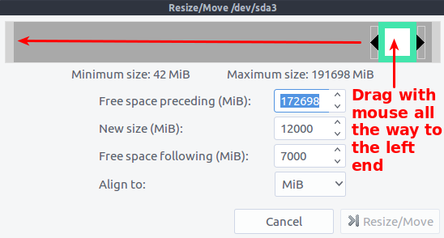
Hover your mouse over the green box representing the sda3 partition. The mouse cursor will change to a “hand” indicating the object below it can be moved. Click down with the mouse inside the middle of the green box, and drag it to the left, moving the whole partition all the way to the left end of the graphic. The MiB figures in the size boxes automatically change as the box is moved. The Resize/Move dialog should then look similar to this:
With the partition now at the left end, click on the Resize/Move button as shown above. The program warns about the action:
The move action is set up as a pending operation. As mentioned earlier, the pending actions are only simulated until the Apply All Operations icon is clicked.
Notice that there are now two pending actions listed in the lower window pane of the GParted screen as shown in the illustration below:
Click on the Apply All Operations icon (the green tick mark) on the tool bar to apply both of the pending operations. You will see the usual confirmation message:
Click on the Apply button to execute the changes. A progress dialog will appear:
followed by a notice of successful completion:
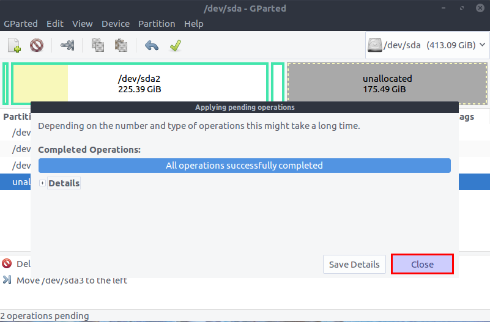
Click on Close. The GParted screen now shows the state of the hard drive:
Note in the illustration above, that the unallocated space is all located at the end of the drive.
Now, while we have GParted running, we should add the Extended partition to the unallocated space:
With the unallocated line selected/highlighted, click on the Partition menu at the top of the GParted program, and select New. The Create new Partition dialog appears:
In the Create new Partition dialog, click on the down arrow of the drop-down list next to the Create as field, as shown in the above image, and select Extended Partition from the list:
With the Extended Partition item selected from the Create as list, click on the Add button at the bottom of the dialog as shown below:
The new extended partition is added to the pending operation list:
Click on the Apply All Operations icon (the green tick) shown in the illustration above – to create the Extended partition. You will be asked to confirm the operation:
Click on Apply to execute the pending operation. The change will happen quickly and you should see the following “successfully completed” message:
Click Close. The Extended partition has now been added to the hard drive, as shown in the following illustration:
If you have followed this Appendix article to remove one or more Windows partitions in order to create an extended partition, the extended partition is now in place. The extended partition (sda4 above) will now function as a container for the Linux partitions. You can now continue with the installation of Wasta Linux on the system by going back to the procedures detailed from Step 6 and onwards.
Installing
Wasta Linux - to dual boot with an Existing Windows system Page